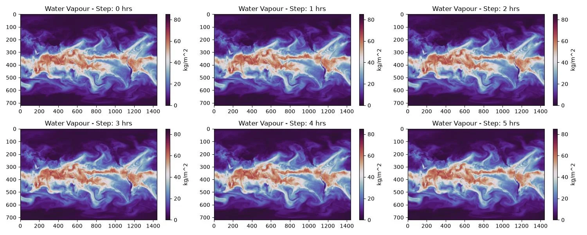

Temporal Interpolation¶
Temporal Interpolation inference using InterpModAFNO model.
This example demonstrates how to use the InterpModAFNO model to interpolate forecasts from a base model to a finer time resolution. Many of the existing prognostic models have a step size of 6 hours which may prove insufficient for some applications. InterpModAFNO provides a AI driven method for getting hourly resolution given 6 hour predictions.
In this example you will learn:
- How to load a base prognostic model
- How to load the InterpModAFNO model
- How to run the interpolation model
- How to visualize the results
Set Up¶
First, import the necessary modules and set up our environment and load the models. We will use SFNO as the base prognostic model and the InterpModAFNO model to interpolate its output to a finer time resolution. The prognostic model must predict the needed variables in the interpolation model.
This example needs the following:
- Interpolation Model:
earth2studio.models.px.InterpModAFNO. - Prognostic Base Model: Use SFNO model
earth2studio.models.px.SFNO. - Datasource: Pull data from the GFS data api
earth2studio.data.GFS.
import os
import matplotlib.pyplot as plt
from earth2studio.data import GFS
from earth2studio.io import ZarrBackend
from earth2studio.models.px import SFNO, InterpModAFNO
# Create output directory
os.makedirs("outputs", exist_ok=True)
sfno_package = SFNO.load_default_package()
px_model = SFNO.load_model(sfno_package)
# Load the interpolation model
interp_package = InterpModAFNO.load_default_package()
interp_model = InterpModAFNO.load_model(interp_package, px_model=px_model)
# Create the data source
data = GFS()
# Create the IO handler
io = ZarrBackend()
Console output2 lines
/localhome/local-ngeneva/.cache/uv/environments-v2/harness-692aa091deae5888/lib/python3.13/site-packages/torch/cuda/__init__.py:64: FutureWarning: The pynvml package is deprecated. Please install nvidia-ml-py instead. If you did not install pynvml directly, please report this to the maintainers of the package that installed pynvml for you.
import pynvml # type: ignore[import]Run the Interpolation Model¶
Now run the interpolation model to get forecasts at a finer time resolution. The base model (SFNO) produces forecasts at 6-hour intervals, and the interpolation model will interpolate to 1-hour intervals.
# Define forecast parameters
forecast_date = "2024-01-01"
nsteps = 5 # Number of interpolated forecast steps
# Run the model
from earth2studio.run import deterministic
io = deterministic([forecast_date], nsteps, interp_model, data, io)
print(io.root.tree())
Console output397 lines
2026-08-13 19:25:36.704 | INFO | earth2studio.run:deterministic:87 - Running simple workflow!
2026-08-13 19:25:36.704 | INFO | earth2studio.run:deterministic:94 - Inference device: cuda
Fetching GFS data: 0%| | 0/73 [00:00<?, ?it/s]
2026-08-13 19:25:37.466 | DEBUG | earth2studio.data.gfs:fetch_array:386 - Fetching GFS grib file: noaa-gfs-bdp-pds/gfs.20240101/00/atmos/gfs.t00z.pgrb2.0p25.f000 189450163-577835
Fetching GFS data: 0%| | 0/73 [00:00<?, ?it/s]
2026-08-13 19:25:37.488 | DEBUG | earth2studio.data.gfs:fetch_array:386 - Fetching GFS grib file: noaa-gfs-bdp-pds/gfs.20240101/00/atmos/gfs.t00z.pgrb2.0p25.f000 407591936-940269
Fetching GFS data: 0%| | 0/73 [00:00<?, ?it/s]
2026-08-13 19:25:37.505 | DEBUG | earth2studio.data.gfs:fetch_array:386 - Fetching GFS grib file: noaa-gfs-bdp-pds/gfs.20240101/00/atmos/gfs.t00z.pgrb2.0p25.f000 323956279-837771
Fetching GFS data: 0%| | 0/73 [00:00<?, ?it/s]
2026-08-13 19:25:37.516 | DEBUG | earth2studio.data.gfs:fetch_array:386 - Fetching GFS grib file: noaa-gfs-bdp-pds/gfs.20240101/00/atmos/gfs.t00z.pgrb2.0p25.f000 206944850-1065961
Fetching GFS data: 0%| | 0/73 [00:00<?, ?it/s]
2026-08-13 19:25:37.547 | DEBUG | earth2studio.data.gfs:fetch_array:386 - Fetching GFS grib file: noaa-gfs-bdp-pds/gfs.20240101/00/atmos/gfs.t00z.pgrb2.0p25.f000 164520517-765194
Fetching GFS data: 0%| | 0/73 [00:00<?, ?it/s]
2026-08-13 19:25:37.547 | DEBUG | earth2studio.data.gfs:fetch_array:386 - Fetching GFS grib file: noaa-gfs-bdp-pds/gfs.20240101/00/atmos/gfs.t00z.pgrb2.0p25.f000 204118947-720169
Fetching GFS data: 0%| | 0/73 [00:00<?, ?it/s]
2026-08-13 19:25:37.547 | DEBUG | earth2studio.data.gfs:fetch_array:386 - Fetching GFS grib file: noaa-gfs-bdp-pds/gfs.20240101/00/atmos/gfs.t00z.pgrb2.0p25.f000 296555652-890544
Fetching GFS data: 0%| | 0/73 [00:00<?, ?it/s]
2026-08-13 19:25:37.551 | DEBUG | earth2studio.data.gfs:fetch_array:386 - Fetching GFS grib file: noaa-gfs-bdp-pds/gfs.20240101/00/atmos/gfs.t00z.pgrb2.0p25.f000 149106074-462399
Fetching GFS data: 0%| | 0/73 [00:00<?, ?it/s]
2026-08-13 19:25:37.599 | DEBUG | earth2studio.data.gfs:fetch_array:386 - Fetching GFS grib file: noaa-gfs-bdp-pds/gfs.20240101/00/atmos/gfs.t00z.pgrb2.0p25.f000 179198897-973788
Fetching GFS data: 0%| | 0/73 [00:00<?, ?it/s]
2026-08-13 19:25:37.645 | DEBUG | earth2studio.data.gfs:fetch_array:386 - Fetching GFS grib file: noaa-gfs-bdp-pds/gfs.20240101/00/atmos/gfs.t00z.pgrb2.0p25.f000 347812101-849637
Fetching GFS data: 0%| | 0/73 [00:00<?, ?it/s]
2026-08-13 19:25:37.655 | DEBUG | earth2studio.data.gfs:fetch_array:386 - Fetching GFS grib file: noaa-gfs-bdp-pds/gfs.20240101/00/atmos/gfs.t00z.pgrb2.0p25.f000 228474082-1138597
Fetching GFS data: 0%| | 0/73 [00:00<?, ?it/s]
2026-08-13 19:25:37.656 | DEBUG | earth2studio.data.gfs:fetch_array:386 - Fetching GFS grib file: noaa-gfs-bdp-pds/gfs.20240101/00/atmos/gfs.t00z.pgrb2.0p25.f000 174896277-746582
Fetching GFS data: 0%| | 0/73 [00:00<?, ?it/s]
2026-08-13 19:25:37.730 | DEBUG | earth2studio.data.gfs:fetch_array:386 - Fetching GFS grib file: noaa-gfs-bdp-pds/gfs.20240101/00/atmos/gfs.t00z.pgrb2.0p25.f000 225640684-816551
Fetching GFS data: 0%| | 0/73 [00:00<?, ?it/s]
2026-08-13 19:25:37.735 | DEBUG | earth2studio.data.gfs:fetch_array:386 - Fetching GFS grib file: noaa-gfs-bdp-pds/gfs.20240101/00/atmos/gfs.t00z.pgrb2.0p25.f000 330670600-938837
Fetching GFS data: 0%| | 0/73 [00:00<?, ?it/s]
2026-08-13 19:25:37.736 | DEBUG | earth2studio.data.gfs:fetch_array:386 - Fetching GFS grib file: noaa-gfs-bdp-pds/gfs.20240101/00/atmos/gfs.t00z.pgrb2.0p25.f000 170010298-904882
Fetching GFS data: 0%| | 0/73 [00:00<?, ?it/s]
2026-08-13 19:25:37.770 | DEBUG | earth2studio.data.gfs:fetch_array:386 - Fetching GFS grib file: noaa-gfs-bdp-pds/gfs.20240101/00/atmos/gfs.t00z.pgrb2.0p25.f000 295659093-896559
Fetching GFS data: 0%| | 0/73 [00:00<?, ?it/s]
2026-08-13 19:25:37.865 | DEBUG | earth2studio.data.gfs:fetch_array:386 - Fetching GFS grib file: noaa-gfs-bdp-pds/gfs.20240101/00/atmos/gfs.t00z.pgrb2.0p25.f000 148613430-492644
Fetching GFS data: 0%| | 0/73 [00:00<?, ?it/s]
2026-08-13 19:25:37.865 | DEBUG | earth2studio.data.gfs:fetch_array:386 - Fetching GFS grib file: noaa-gfs-bdp-pds/gfs.20240101/00/atmos/gfs.t00z.pgrb2.0p25.f000 381424372-852801
Fetching GFS data: 0%| | 0/73 [00:00<?, ?it/s]
2026-08-13 19:25:37.871 | DEBUG | earth2studio.data.gfs:fetch_array:386 - Fetching GFS grib file: noaa-gfs-bdp-pds/gfs.20240101/00/atmos/gfs.t00z.pgrb2.0p25.f000 249098202-1262404
Fetching GFS data: 0%| | 0/73 [00:00<?, ?it/s]
2026-08-13 19:25:37.899 | DEBUG | earth2studio.data.gfs:fetch_array:386 - Fetching GFS grib file: noaa-gfs-bdp-pds/gfs.20240101/00/atmos/gfs.t00z.pgrb2.0p25.f000 184782162-755841
Fetching GFS data: 0%| | 0/73 [00:00<?, ?it/s]
2026-08-13 19:25:37.900 | DEBUG | earth2studio.data.gfs:fetch_array:386 - Fetching GFS grib file: noaa-gfs-bdp-pds/gfs.20240101/00/atmos/gfs.t00z.pgrb2.0p25.f000 246334297-805355
Fetching GFS data: 0%| | 0/73 [00:00<?, ?it/s]
2026-08-13 19:25:37.900 | DEBUG | earth2studio.data.gfs:fetch_array:386 - Fetching GFS grib file: noaa-gfs-bdp-pds/gfs.20240101/00/atmos/gfs.t00z.pgrb2.0p25.f000 354558976-950206
Fetching GFS data: 0%| | 0/73 [00:00<?, ?it/s]
2026-08-13 19:25:37.900 | DEBUG | earth2studio.data.gfs:fetch_array:386 - Fetching GFS grib file: noaa-gfs-bdp-pds/gfs.20240101/00/atmos/gfs.t00z.pgrb2.0p25.f000 180172685-913532
Fetching GFS data: 0%| | 0/73 [00:00<?, ?it/s]
2026-08-13 19:25:37.970 | DEBUG | earth2studio.data.gfs:fetch_array:386 - Fetching GFS grib file: noaa-gfs-bdp-pds/gfs.20240101/00/atmos/gfs.t00z.pgrb2.0p25.f000 252556659-958137
Fetching GFS data: 0%| | 0/73 [00:00<?, ?it/s]
2026-08-13 19:25:38.049 | DEBUG | earth2studio.data.gfs:fetch_array:386 - Fetching GFS grib file: noaa-gfs-bdp-pds/gfs.20240101/00/atmos/gfs.t00z.pgrb2.0p25.f000 0-993995
Fetching GFS data: 0%| | 0/73 [00:00<?, ?it/s]
2026-08-13 19:25:38.088 | DEBUG | earth2studio.data.gfs:fetch_array:386 - Fetching GFS grib file: noaa-gfs-bdp-pds/gfs.20240101/00/atmos/gfs.t00z.pgrb2.0p25.f000 406629528-962408
Fetching GFS data: 0%| | 0/73 [00:00<?, ?it/s]
2026-08-13 19:25:38.145 | DEBUG | earth2studio.data.gfs:fetch_array:386 - Fetching GFS grib file: noaa-gfs-bdp-pds/gfs.20240101/00/atmos/gfs.t00z.pgrb2.0p25.f000 145318799-1019625
Fetching GFS data: 0%| | 0/73 [00:00<?, ?it/s]
2026-08-13 19:25:38.151 | DEBUG | earth2studio.data.gfs:fetch_array:386 - Fetching GFS grib file: noaa-gfs-bdp-pds/gfs.20240101/00/atmos/gfs.t00z.pgrb2.0p25.f000 194463909-743465
Fetching GFS data: 0%| | 0/73 [00:00<?, ?it/s]
2026-08-13 19:25:38.181 | DEBUG | earth2studio.data.gfs:fetch_array:386 - Fetching GFS grib file: noaa-gfs-bdp-pds/gfs.20240101/00/atmos/gfs.t00z.pgrb2.0p25.f000 270785488-1177846
Fetching GFS data: 0%| | 0/73 [00:00<?, ?it/s]
2026-08-13 19:25:38.182 | DEBUG | earth2studio.data.gfs:fetch_array:386 - Fetching GFS grib file: noaa-gfs-bdp-pds/gfs.20240101/00/atmos/gfs.t00z.pgrb2.0p25.f000 268038708-839499
Fetching GFS data: 0%| | 0/73 [00:00<?, ?it/s]
2026-08-13 19:25:38.194 | DEBUG | earth2studio.data.gfs:fetch_array:386 - Fetching GFS grib file: noaa-gfs-bdp-pds/gfs.20240101/00/atmos/gfs.t00z.pgrb2.0p25.f000 387322476-948106
Fetching GFS data: 0%| | 0/73 [00:00<?, ?it/s]
2026-08-13 19:25:38.194 | DEBUG | earth2studio.data.gfs:fetch_array:386 - Fetching GFS grib file: noaa-gfs-bdp-pds/gfs.20240101/00/atmos/gfs.t00z.pgrb2.0p25.f000 190027998-577814
Fetching GFS data: 0%| | 0/73 [00:00<?, ?it/s]
2026-08-13 19:25:38.195 | DEBUG | earth2studio.data.gfs:fetch_array:386 - Fetching GFS grib file: noaa-gfs-bdp-pds/gfs.20240101/00/atmos/gfs.t00z.pgrb2.0p25.f000 231827443-572989
Fetching GFS data: 0%| | 0/73 [00:00<?, ?it/s]
2026-08-13 19:25:38.361 | DEBUG | earth2studio.data.gfs:fetch_array:386 - Fetching GFS grib file: noaa-gfs-bdp-pds/gfs.20240101/00/atmos/gfs.t00z.pgrb2.0p25.f000 393705863-838502
Fetching GFS data: 0%| | 0/73 [00:00<?, ?it/s]
2026-08-13 19:25:38.361 | DEBUG | earth2studio.data.gfs:fetch_array:386 - Fetching GFS grib file: noaa-gfs-bdp-pds/gfs.20240101/00/atmos/gfs.t00z.pgrb2.0p25.f000 165935718-1138677
Fetching GFS data: 0%| | 0/73 [00:00<?, ?it/s]
2026-08-13 19:25:38.362 | DEBUG | earth2studio.data.gfs:fetch_array:386 - Fetching GFS grib file: noaa-gfs-bdp-pds/gfs.20240101/00/atmos/gfs.t00z.pgrb2.0p25.f000 292088625-1244938
Fetching GFS data: 0%| | 0/73 [00:00<?, ?it/s]
2026-08-13 19:25:38.396 | DEBUG | earth2studio.data.gfs:fetch_array:386 - Fetching GFS grib file: noaa-gfs-bdp-pds/gfs.20240101/00/atmos/gfs.t00z.pgrb2.0p25.f000 204839116-753955
Fetching GFS data: 0%| | 0/73 [00:00<?, ?it/s]
2026-08-13 19:25:38.397 | DEBUG | earth2studio.data.gfs:fetch_array:386 - Fetching GFS grib file: noaa-gfs-bdp-pds/gfs.20240101/00/atmos/gfs.t00z.pgrb2.0p25.f000 289307267-851916
Fetching GFS data: 0%| | 0/73 [00:00<?, ?it/s]
2026-08-13 19:25:38.436 | DEBUG | earth2studio.data.gfs:fetch_array:386 - Fetching GFS grib file: noaa-gfs-bdp-pds/gfs.20240101/00/atmos/gfs.t00z.pgrb2.0p25.f000 143527711-755695
Fetching GFS data: 0%| | 0/73 [00:00<?, ?it/s]
2026-08-13 19:25:38.546 | DEBUG | earth2studio.data.gfs:fetch_array:386 - Fetching GFS grib file: noaa-gfs-bdp-pds/gfs.20240101/00/atmos/gfs.t00z.pgrb2.0p25.f000 199934883-595444
Fetching GFS data: 0%| | 0/73 [00:01<?, ?it/s]
2026-08-13 19:25:38.547 | DEBUG | earth2studio.data.gfs:fetch_array:386 - Fetching GFS grib file: noaa-gfs-bdp-pds/gfs.20240101/00/atmos/gfs.t00z.pgrb2.0p25.f000 274285343-895314
Fetching GFS data: 0%| | 0/73 [00:01<?, ?it/s]
2026-08-13 19:25:38.548 | DEBUG | earth2studio.data.gfs:fetch_array:386 - Fetching GFS grib file: noaa-gfs-bdp-pds/gfs.20240101/00/atmos/gfs.t00z.pgrb2.0p25.f000 414179964-1179422
Fetching GFS data: 0%| | 0/73 [00:01<?, ?it/s]
2026-08-13 19:25:38.548 | DEBUG | earth2studio.data.gfs:fetch_array:386 - Fetching GFS grib file: noaa-gfs-bdp-pds/gfs.20240101/00/atmos/gfs.t00z.pgrb2.0p25.f000 176434139-1041731
Fetching GFS data: 0%| | 0/73 [00:01<?, ?it/s]
2026-08-13 19:25:38.548 | DEBUG | earth2studio.data.gfs:fetch_array:386 - Fetching GFS grib file: noaa-gfs-bdp-pds/gfs.20240101/00/atmos/gfs.t00z.pgrb2.0p25.f000 326166249-1225442
Fetching GFS data: 0%| | 0/73 [00:01<?, ?it/s]
2026-08-13 19:25:38.549 | DEBUG | earth2studio.data.gfs:fetch_array:386 - Fetching GFS grib file: noaa-gfs-bdp-pds/gfs.20240101/00/atmos/gfs.t00z.pgrb2.0p25.f000 226457235-723507
Fetching GFS data: 0%| | 0/73 [00:01<?, ?it/s]
2026-08-13 19:25:38.571 | DEBUG | earth2studio.data.gfs:fetch_array:386 - Fetching GFS grib file: noaa-gfs-bdp-pds/gfs.20240101/00/atmos/gfs.t00z.pgrb2.0p25.f000 323061199-895080
Fetching GFS data: 0%| | 0/73 [00:01<?, ?it/s]
2026-08-13 19:25:38.738 | DEBUG | earth2studio.data.gfs:fetch_array:386 - Fetching GFS grib file: noaa-gfs-bdp-pds/gfs.20240101/00/atmos/gfs.t00z.pgrb2.0p25.f000 163781343-739174
Fetching GFS data: 0%| | 0/73 [00:01<?, ?it/s]
2026-08-13 19:25:38.739 | DEBUG | earth2studio.data.gfs:fetch_array:386 - Fetching GFS grib file: noaa-gfs-bdp-pds/gfs.20240101/00/atmos/gfs.t00z.pgrb2.0p25.f000 210820017-615282
Fetching GFS data: 0%| | 0/73 [00:01<?, ?it/s]
2026-08-13 19:25:38.739 | DEBUG | earth2studio.data.gfs:fetch_array:386 - Fetching GFS grib file: noaa-gfs-bdp-pds/gfs.20240101/00/atmos/gfs.t00z.pgrb2.0p25.f000 210217024-602993
Fetching GFS data: 0%| | 0/73 [00:01<?, ?it/s]
2026-08-13 19:25:38.746 | DEBUG | earth2studio.data.gfs:fetch_array:386 - Fetching GFS grib file: noaa-gfs-bdp-pds/gfs.20240101/00/atmos/gfs.t00z.pgrb2.0p25.f000 402321768-876246
Fetching GFS data: 0%| | 0/73 [00:01<?, ?it/s]
2026-08-13 19:25:38.746 | DEBUG | earth2studio.data.gfs:fetch_array:386 - Fetching GFS grib file: noaa-gfs-bdp-pds/gfs.20240101/00/atmos/gfs.t00z.pgrb2.0p25.f000 186591756-1053680
Fetching GFS data: 0%| | 0/73 [00:01<?, ?it/s]
2026-08-13 19:25:38.747 | DEBUG | earth2studio.data.gfs:fetch_array:386 - Fetching GFS grib file: noaa-gfs-bdp-pds/gfs.20240101/00/atmos/gfs.t00z.pgrb2.0p25.f000 350072351-1232650
Fetching GFS data: 0%| | 0/73 [00:01<?, ?it/s]
2026-08-13 19:25:38.747 | DEBUG | earth2studio.data.gfs:fetch_array:386 - Fetching GFS grib file: noaa-gfs-bdp-pds/gfs.20240101/00/atmos/gfs.t00z.pgrb2.0p25.f000 247139652-717479
Fetching GFS data: 0%| | 0/73 [00:01<?, ?it/s]
2026-08-13 19:25:38.747 | DEBUG | earth2studio.data.gfs:fetch_array:386 - Fetching GFS grib file: noaa-gfs-bdp-pds/gfs.20240101/00/atmos/gfs.t00z.pgrb2.0p25.f000 346879212-932889
Fetching GFS data: 0%| | 0/73 [00:01<?, ?it/s]
2026-08-13 19:25:38.843 | DEBUG | earth2studio.data.gfs:fetch_array:386 - Fetching GFS grib file: noaa-gfs-bdp-pds/gfs.20240101/00/atmos/gfs.t00z.pgrb2.0p25.f000 174160271-736006
Fetching GFS data: 0%| | 0/73 [00:01<?, ?it/s]
2026-08-13 19:25:38.844 | DEBUG | earth2studio.data.gfs:fetch_array:386 - Fetching GFS grib file: noaa-gfs-bdp-pds/gfs.20240101/00/atmos/gfs.t00z.pgrb2.0p25.f000 232400432-586007
Fetching GFS data: 0%| | 0/73 [00:01<?, ?it/s]
2026-08-13 19:25:38.936 | DEBUG | earth2studio.data.gfs:fetch_array:386 - Fetching GFS grib file: noaa-gfs-bdp-pds/gfs.20240101/00/atmos/gfs.t00z.pgrb2.0p25.f000 329739828-930772
Fetching GFS data: 0%| | 0/73 [00:01<?, ?it/s]
2026-08-13 19:25:38.936 | DEBUG | earth2studio.data.gfs:fetch_array:386 - Fetching GFS grib file: noaa-gfs-bdp-pds/gfs.20240101/00/atmos/gfs.t00z.pgrb2.0p25.f000 199346060-588823
Fetching GFS data: 0%| | 0/73 [00:01<?, ?it/s]
2026-08-13 19:25:38.997 | DEBUG | earth2studio.data.gfs:fetch_array:386 - Fetching GFS grib file: noaa-gfs-bdp-pds/gfs.20240101/00/atmos/gfs.t00z.pgrb2.0p25.f000 451628742-968328
Fetching GFS data: 0%| | 0/73 [00:01<?, ?it/s]
2026-08-13 19:25:38.997 | DEBUG | earth2studio.data.gfs:fetch_array:386 - Fetching GFS grib file: noaa-gfs-bdp-pds/gfs.20240101/00/atmos/gfs.t00z.pgrb2.0p25.f000 196462617-1008822
Fetching GFS data: 0%| | 0/73 [00:01<?, ?it/s]
2026-08-13 19:25:39.101 | DEBUG | earth2studio.data.gfs:fetch_array:386 - Fetching GFS grib file: noaa-gfs-bdp-pds/gfs.20240101/00/atmos/gfs.t00z.pgrb2.0p25.f000 268878207-724790
Fetching GFS data: 0%| | 0/73 [00:01<?, ?it/s]
2026-08-13 19:25:39.129 | DEBUG | earth2studio.data.gfs:fetch_array:386 - Fetching GFS grib file: noaa-gfs-bdp-pds/gfs.20240101/00/atmos/gfs.t00z.pgrb2.0p25.f000 383286081-1212507
Fetching GFS data: 0%| | 0/73 [00:01<?, ?it/s]
2026-08-13 19:25:39.130 | DEBUG | earth2studio.data.gfs:fetch_array:386 - Fetching GFS grib file: noaa-gfs-bdp-pds/gfs.20240101/00/atmos/gfs.t00z.pgrb2.0p25.f000 391722290-987401
Fetching GFS data: 0%| | 0/73 [00:01<?, ?it/s]
2026-08-13 19:25:39.130 | DEBUG | earth2studio.data.gfs:fetch_array:386 - Fetching GFS grib file: noaa-gfs-bdp-pds/gfs.20240101/00/atmos/gfs.t00z.pgrb2.0p25.f000 184050412-731750
Fetching GFS data: 0%| | 0/73 [00:01<?, ?it/s]
2026-08-13 19:25:39.177 | DEBUG | earth2studio.data.gfs:fetch_array:386 - Fetching GFS grib file: noaa-gfs-bdp-pds/gfs.20240101/00/atmos/gfs.t00z.pgrb2.0p25.f000 253514796-920355
Fetching GFS data: 0%| | 0/73 [00:01<?, ?it/s]
2026-08-13 19:25:39.206 | DEBUG | earth2studio.data.gfs:fetch_array:386 - Fetching GFS grib file: noaa-gfs-bdp-pds/gfs.20240101/00/atmos/gfs.t00z.pgrb2.0p25.f000 353619033-939943
Fetching GFS data: 0%| | 0/73 [00:01<?, ?it/s]
2026-08-13 19:25:39.207 | DEBUG | earth2studio.data.gfs:fetch_array:386 - Fetching GFS grib file: noaa-gfs-bdp-pds/gfs.20240101/00/atmos/gfs.t00z.pgrb2.0p25.f000 169090127-920171
Fetching GFS data: 0%| | 0/73 [00:01<?, ?it/s]
Fetching GFS data: 1%|▏ | 1/73 [00:01<02:13, 1.85s/it]
2026-08-13 19:25:39.435 | DEBUG | earth2studio.data.gfs:fetch_array:386 - Fetching GFS grib file: noaa-gfs-bdp-pds/gfs.20240101/00/atmos/gfs.t00z.pgrb2.0p25.f000 452597070-961302
Fetching GFS data: 1%|▏ | 1/73 [00:01<02:13, 1.85s/it]
2026-08-13 19:25:39.436 | DEBUG | earth2studio.data.gfs:fetch_array:386 - Fetching GFS grib file: noaa-gfs-bdp-pds/gfs.20240101/00/atmos/gfs.t00z.pgrb2.0p25.f000 290159183-752827
Fetching GFS data: 1%|▏ | 1/73 [00:01<02:13, 1.85s/it]
2026-08-13 19:25:39.439 | DEBUG | earth2studio.data.gfs:fetch_array:386 - Fetching GFS grib file: noaa-gfs-bdp-pds/gfs.20240101/00/atmos/gfs.t00z.pgrb2.0p25.f000 144283406-743766
Fetching GFS data: 1%|▏ | 1/73 [00:01<02:13, 1.85s/it]
2026-08-13 19:25:39.459 | DEBUG | earth2studio.data.gfs:fetch_array:386 - Fetching GFS grib file: noaa-gfs-bdp-pds/gfs.20240101/00/atmos/gfs.t00z.pgrb2.0p25.f000 193737151-726758
Fetching GFS data: 1%|▏ | 1/73 [00:01<02:13, 1.85s/it]
2026-08-13 19:25:39.459 | DEBUG | earth2studio.data.gfs:fetch_array:386 - Fetching GFS grib file: noaa-gfs-bdp-pds/gfs.20240101/00/atmos/gfs.t00z.pgrb2.0p25.f000 275180657-890286
Fetching GFS data: 1%|▏ | 1/73 [00:01<02:13, 1.85s/it]
2026-08-13 19:25:39.459 | DEBUG | earth2studio.data.gfs:fetch_array:386 - Fetching GFS grib file: noaa-gfs-bdp-pds/gfs.20240101/00/atmos/gfs.t00z.pgrb2.0p25.f000 386359113-963363
Fetching GFS data: 1%|▏ | 1/73 [00:01<02:13, 1.85s/it]
Fetching GFS data: 5%|▌ | 4/73 [00:02<00:29, 2.36it/s]
Fetching GFS data: 100%|██████████| 73/73 [00:02<00:00, 34.01it/s]
2026-08-13 19:25:39.754 | SUCCESS | earth2studio.run:deterministic:156 - Fetched data from GFS
2026-08-13 19:25:39.755 | INFO | earth2studio.run:deterministic:164 - Inference starting!
Running inference: 0%| | 0/6 [00:00<?, ?it/s]
Running inference: 17%|█▋ | 1/6 [00:02<00:11, 2.24s/it]
Running inference: 33%|███▎ | 2/6 [00:06<00:14, 3.63s/it]
Running inference: 50%|█████ | 3/6 [00:09<00:10, 3.37s/it]
Running inference: 67%|██████▋ | 4/6 [00:12<00:06, 3.25s/it]
Running inference: 83%|████████▎ | 5/6 [00:16<00:03, 3.23s/it]
Running inference: 100%|██████████| 6/6 [00:18<00:00, 3.07s/it]
Running inference: 100%|██████████| 6/6 [00:18<00:00, 3.15s/it]
2026-08-13 19:25:58.682 | SUCCESS | earth2studio.run:deterministic:191 -
Inference complete
/
├── lat (720,) float64
├── lead_time (6,) timedelta64[h]
├── lon (1440,) float64
├── msl (1, 6, 720, 1440) float32
├── q100 (1, 6, 720, 1440) float32
├── q1000 (1, 6, 720, 1440) float32
├── q150 (1, 6, 720, 1440) float32
├── q200 (1, 6, 720, 1440) float32
├── q250 (1, 6, 720, 1440) float32
├── q300 (1, 6, 720, 1440) float32
├── q400 (1, 6, 720, 1440) float32
├── q50 (1, 6, 720, 1440) float32
├── q500 (1, 6, 720, 1440) float32
├── q600 (1, 6, 720, 1440) float32
├── q700 (1, 6, 720, 1440) float32
├── q850 (1, 6, 720, 1440) float32
├── q925 (1, 6, 720, 1440) float32
├── sp (1, 6, 720, 1440) float32
├── t100 (1, 6, 720, 1440) float32
├── t1000 (1, 6, 720, 1440) float32
├── t150 (1, 6, 720, 1440) float32
├── t200 (1, 6, 720, 1440) float32
├── t250 (1, 6, 720, 1440) float32
├── t2m (1, 6, 720, 1440) float32
├── t300 (1, 6, 720, 1440) float32
├── t400 (1, 6, 720, 1440) float32
├── t50 (1, 6, 720, 1440) float32
├── t500 (1, 6, 720, 1440) float32
├── t600 (1, 6, 720, 1440) float32
├── t700 (1, 6, 720, 1440) float32
├── t850 (1, 6, 720, 1440) float32
├── t925 (1, 6, 720, 1440) float32
├── tcwv (1, 6, 720, 1440) float32
├── time (1,) datetime64[ns]
├── u100 (1, 6, 720, 1440) float32
├── u1000 (1, 6, 720, 1440) float32
├── u100m (1, 6, 720, 1440) float32
├── u10m (1, 6, 720, 1440) float32
├── u150 (1, 6, 720, 1440) float32
├── u200 (1, 6, 720, 1440) float32
├── u250 (1, 6, 720, 1440) float32
├── u300 (1, 6, 720, 1440) float32
├── u400 (1, 6, 720, 1440) float32
├── u50 (1, 6, 720, 1440) float32
├── u500 (1, 6, 720, 1440) float32
├── u600 (1, 6, 720, 1440) float32
├── u700 (1, 6, 720, 1440) float32
├── u850 (1, 6, 720, 1440) float32
├── u925 (1, 6, 720, 1440) float32
├── v100 (1, 6, 720, 1440) float32
├── v1000 (1, 6, 720, 1440) float32
├── v100m (1, 6, 720, 1440) float32
├── v10m (1, 6, 720, 1440) float32
├── v150 (1, 6, 720, 1440) float32
├── v200 (1, 6, 720, 1440) float32
├── v250 (1, 6, 720, 1440) float32
├── v300 (1, 6, 720, 1440) float32
├── v400 (1, 6, 720, 1440) float32
├── v50 (1, 6, 720, 1440) float32
├── v500 (1, 6, 720, 1440) float32
├── v600 (1, 6, 720, 1440) float32
├── v700 (1, 6, 720, 1440) float32
├── v850 (1, 6, 720, 1440) float32
├── v925 (1, 6, 720, 1440) float32
├── z100 (1, 6, 720, 1440) float32
├── z1000 (1, 6, 720, 1440) float32
├── z150 (1, 6, 720, 1440) float32
├── z200 (1, 6, 720, 1440) float32
├── z250 (1, 6, 720, 1440) float32
├── z300 (1, 6, 720, 1440) float32
├── z400 (1, 6, 720, 1440) float32
├── z50 (1, 6, 720, 1440) float32
├── z500 (1, 6, 720, 1440) float32
├── z600 (1, 6, 720, 1440) float32
├── z700 (1, 6, 720, 1440) float32
├── z850 (1, 6, 720, 1440) float32
└── z925 (1, 6, 720, 1440) float32Visualize Results¶
Let's visualize the total column water vapour (tcwv) at each time step and save them as separate files.
# Get the number of time steps
n_steps = io["tcwv"].shape[1]
# Create a single figure with subplots
fig, axs = plt.subplots(2, 3, figsize=(15, 6))
axs = axs.ravel()
# Create plots for each time step
for step in range(min([n_steps, 6])):
im = axs[step].imshow(
io["tcwv"][0, step], cmap="twilight_shifted", aspect="auto", vmin=0, vmax=85
)
axs[step].set_title(f"Water Vapour - Step: {step} hrs")
fig.colorbar(im, ax=axs[step], label="kg/m^2")
plt.tight_layout()
# Save the figure
plt.savefig("outputs/12_tcwv_steps.jpg")
